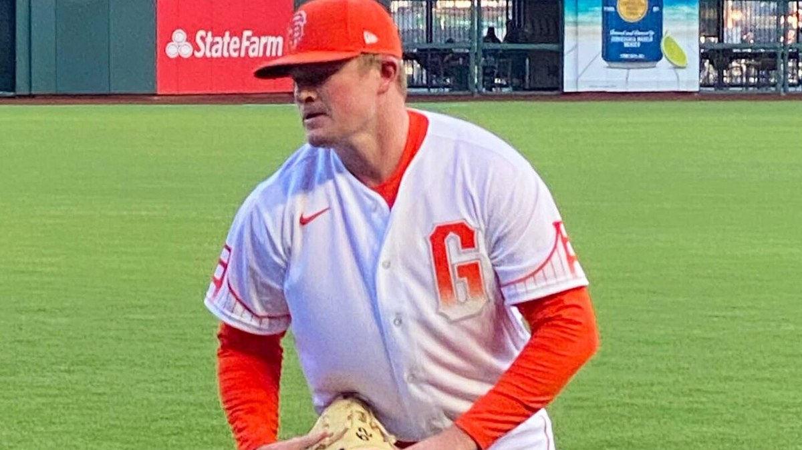

The Giants Blew a 3-0 Lead to the Mariners, and I Am Sick of Writing This Column
Logan Webb carved for six and two thirds, Devers and Adames went deep, and Seattle still walked it off 4-3 in ten. One Cole Young swing, one sacrifice fly, and another winnable game in the toilet. Three hits. They gave up three hits and lost.
The Rundown
Five thingsA'sA's 15, Nationals 1: Ginn no-hits Washington into the seventh and the 10-game skid is dead
GiantsAdames grand slam and a Roupp shutout: Giants blank the Mariners 7-0 to open the second half
A'sNationals 23, A's 4: Oakland opens the second half with an embarrassing blowout
Bay AreaAll-Star Game: Langeliers reached twice, Arraez got one swing, Webb never threw a pitch
49ersThis might be the best team Kyle Shanahan has ever had
Latest Stories

Brandon Aiyuk Has Gone Full Antonio Brown, and It's Hard to Watch
Aiyuk once looked like one of the 49ers' cleanest success stories. Since the Super Bowl loss to Kansas City, the story has turned into something much stranger.

Jerry Rice Says This Is the Year the 49ers Break the Super Bowl Drought
"I think this is the year for the Niners." The GOAT called his shot at Lake Tahoe, and the roster backs him up.

The Giants Bullpen Finally Held One
Erik Miller slammed the door in a 3-1 win, and for once the ninth inning was boring.

I Told You the A's Were a Mirage
Nine straight losses, 9-1 to the White Sox, a 7.09 ERA. This was always coming.
Vitello Was Not Ready, and He Told Us So Himself
"I can't talk down to these guys anymore" was the sound of a man discovering the depth of the water after he had already jumped in.

Raiders 2026: Kubiak, Cousins, and a Rookie Named Mendoza Try to Fix a 3-14 Mess
A Bay Area take on the reset in the desert: new coach, a bridge quarterback, the No. 1 overall pick, Ashton Jeanty, and the meat grinder that is the AFC West.

Tyler Mahle Finally Won a Game
Seven strong innings for his first win since April 22, and a three-run Schmitt homer made it count.

The Warriors Are Out of Easy Answers
The hardest questions of the Curry era all arrived at once, and nobody has a good one.

The A's Play in Sacramento Now
And that is the whole ugly story, told by somebody who watched it happen.
You look at the personnel, it doesn't make sense. You look at the way we played some days, it doesn't make sense, but it's baseball.Tony Vitello on the Giants' first half · Read the breakdown
Pick Your Poison
49ers
Five Super Bowls, one long drought, and a roster that might finally be whole.
Warriors
Four titles, 73-9, and the hardest questions of the Curry era.
Giants
Even-year magic, a 42-56 present, and a reset coming August 3.
Athletics
Playing in Sacramento, still ours, and the kids just won 15-1.
Sharks
Celebrini arrived and the rebuild finally has a pulse.